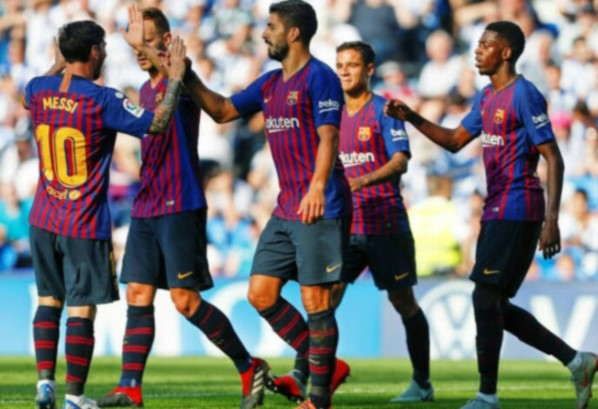
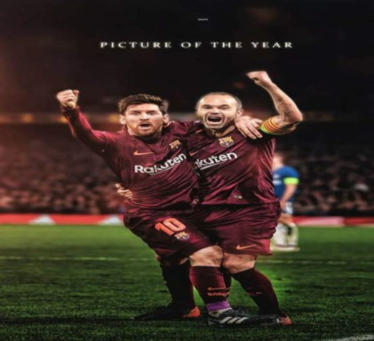

informationmore >> |
we create warld love sports !!more >> |
the best team in the world !!The team was founded in 1899 by a group of Swiss, English |
highlight of the team??The history of Barcelona has often been political. Though it was a club created and run by foreigners, Barcelona gradually became a club associated with Catalan values. In Spain's transition to autocracy in 1925, Catalonia became increasingly hostile towards the central government in Madrid.  Lionel Messi Biography
Lionel Messi is an Argentinian footballer widely regarded as one of the greatest players of the modern generation.
Andrés Iniesta Luján (Spanish pronunciation: [anˈdɾes iˈnjesta luˈxan]; born 11 May 1984) is a Spanish professional footballer who plays as a central midfielder for Japanese club Vissel Kobe. |
newssmartphone companies by shipments in the first quarter this year, according to IDC.. In China, OPPO became the second-largest smartphone company by shipments during the same period, overtaking Apple and Xiaomi, according to Strategy Analytics.. Stores are also more motivated to promote OPPO’s products, Peng says. The company pays the “most competitive” commission rate to sales people, compared with the industry average of 10% to 15% of the phones’ price tags, according to Peng. OPPO declined to reveal the exact number.. A recent endeavor is R9, a device equipped with flash battery charge functions and a 16-megapixel camera suited for taking selfies. The phone, priced from $239 to $539 in China, saw its sales hit more than 7 million units just 88 days after the product’s launch in March, according to the company.. more >> |
History of the basketballsection Basketball is FC Barcelona’s most important professional section, both socially and in a sporting sense, and is the second favorite team of all the Club’s fans Founded on 24 August 1926, the FC Barcelona basketball team played their first games at the Sol de Baix sports complex (between the current Avinguda Madrid and the Travessera de Les Corts). It was not until the 1930s that basketball became well established in Catalonia. After the Spanish Civil War, the FC Barcelona basketball team played in the First Division (1940) on a new court next to the south end of the Les Corts football field. The team’s best era would come in the second half of the 1940s, with Barça firmly seated high up the ladder of Spanish basketball.. |
|
| Home | Conect | News | About |